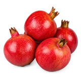

होम / अनार

अनार का भाव आज | Pomegranate Mandi Price Today
अनार के आज के उपलब्ध मंडी भाव देखें—रामगंज मंडी, भिवानी और हिसार के मॉडल, न्यूनतम और अधिकतम रेट और प्रति किलो भाव।
नीचे मंडी-वार सूची में अनार के उपलब्ध भाव दिए हैं। मंडी के नाम पर क्लिक करके उस मंडी की दूसरी फसलों के भाव भी देख सकते हैं।
अनार मंडी भाव आज: जीवाणा, नासिक, सोलापुर मंडी रेट (पेटी व किलो)
राम राम किसान भाइयों!
देशभर के फल बाजारों और कृषि उपज मंडियों में अनार (Pomegranate) सबसे अधिक मुनाफा देने वाली और नकदी प्रवाह वाली बागवानी फसलों में शीर्ष स्थान रखता है। महाराष्ट्र के सोलापुर व नासिक अनार मंडी से लेकर राजस्थान के पश्चिमी अंचल—जालौर, बाड़मेर, सांचौर और जोधपुर तक—अनार की दैनिक खरीद-फरोख्त पर पूरे देश के बड़े फल व्यापारियों की नजर टिकी रहती है। विशेष रूप से राजस्थान की सबसे बड़ी अनार मंडी के रूप में उभरी जीवाणा अनार मंडी में आज अनार का क्या भाव है, यह जानने के लिए स्थानीय बागवानों से लेकर दिल्ली, पंजाब, हरियाणा, गुजरात और दक्षिण भारत के आढ़ती बेहद उत्सुक रहते हैं। थोक स्तर पर तय होने वाला पेटी का भाव और उपभोग केंद्रों पर प्रति किलो की दरें किसानों की वास्तविक कमाई का मुख्य आधार बनती हैं।
अनार का बाजार तंत्र: थोक पेटी बनाम खुदरा प्रति किलो का गणित
थोक मंडियों और खुदरा दुकानों में अनार का व्यापार दो अलग-अलग व्यापारिक पैमानों पर काम करता है। नासिक, सोलापुर या जीवाणा जैसी प्रमुख प्राथमिक मंडियों में किसान जब अपनी उपज लाते हैं, तो व्यापारी मुख्य रूप से कार्टन या पेटी के हिसाब से मोलभाव करते हैं। मानक निर्यात और घरेलू गुणवत्ता की पेटियों में आमतौर पर 9 से 10 किलोग्राम या 12 से 14 किलोग्राम के हिसाब से पैकिंग की जाती है। प्रत्येक पेटी में फलों की गिनती (Counts) और वजन के आधार पर बोली तय होती है।
इसके ठीक विपरीत, स्थानीय किराना और फल बाजारों में जब आम उपभोक्ता फल खरीदने पहुंचता है, तो लेनदेन 1 किलो अनार कितने रुपए का है के आधार पर तय होता है। थोक पेटी के कुल मूल्य और खुदरा में प्रति किलो के भाव के बीच आढ़त, मंडी टैक्स, लंबी दूरी का भाड़ा, तुलाई और खुदरा दुकानदार का मार्जिन जुड़ा होता है। जब किसान अपने माल की सटीक छंटाई करके उसे एकसमान वजन के मजबूत कार्टन में पैक करके मंडी में पेश करते हैं, तो व्यापारी बिना झिझक के उच्चतम बोली लगाते हैं, जिससे किसानों को सीधा आर्थिक लाभ मिलता है।
अनार के मंडी भाव तय करने वाले प्रमुख व्यापारिक मानक
मंडियों में अनार की कीमत केवल आवक की संख्या पर नहीं, बल्कि कई जरूरी गुणवत्ता मानकों पर तय की जाती है:
- किस्म और बाजार में पूछ-परख (भगवा/सिंदूरी): व्यावसायिक रूप से भारत में 'भगवा' (जिसे सिंदूरी अनार भी कहा जाता है) किस्म की मांग सबसे अधिक है। गहरे सिंदूरी लाल रंग के छिलके, मुलायम बीज और चमकदार मीठे दानों (Arils) वाली किस्म को देश के सभी बड़े बाजारों और अंतरराष्ट्रीय निर्यात में सदैव प्रीमियम दाम मिलता है।
- साइज, वजन और ग्रेडिंग (A, B, C ग्रेड): अनार का भाव प्रति फल के वजन पर सबसे ज्यादा निर्भर करता है। 250 ग्राम से 400 ग्राम से अधिक वजन वाले बड़े, सुडौल फलों (सुपर साइज) को उच्चतम भाव श्रेणी में रखा जाता है। इसके मुकाबले 150 से 200 ग्राम वाले मध्यम और छोटे फलों की पेटियों के भाव में भारी अंतर देखने को मिलता है।
- दाग-धब्बे, तेला और छिलके की सफाई: फंगल इन्फेक्शन, तेला (Black Spot) या तुड़ाई व धूप से जले हुए छिलके वाले अनार की कीमत मंडी में तेजी से गिर जाती है। वहीं पूरी तरह बेदाग, साफ और प्राकृतिक चमक लिए हुए चिकने फलों को बड़े रिटेलर्स और निर्यातक सबसे पहली प्राथमिकता देते हैं।
- मौसम चक्र और सस्ता अनार मिलने का समय: अनार की तुड़ाई अलग-अलग बहारों (मृग, हस्त और आंबे बहार) के अनुसार होती है। जब राजस्थान के जालौर-बाड़मेर क्षेत्र और महाराष्ट्र के बागों से एक साथ भारी आवक मंडियों में उतरती है, तब थोक बाजारों में भरपूर आपूर्ति होने के कारण दाम काफी प्रतिस्पर्धी स्तर पर आ जाते हैं। वहीं जब आवक सीमित होती है, तो भाव तुरंत आसमान छूने लगते हैं।
- पैकेजिंग और लंबी दूरी का परिवहन: थर्माकोल नेटिंग और ट्रे-पैक कार्टन में पैक किए गए अनार लंबी दूरी के सफर में आपस में टकराते नहीं हैं और न ही दबते हैं। नासिक या जीवाणा से दिल्ली, कोलकाता और गुवाहाटी जैसे दूरस्थ शहरों के व्यापारी ऐसी मजबूत पैकेजिंग वाली पेटियों पर सबसे ऊंची बोली लगाते हैं।
किसानों के लिए अधिकतम भाव और मुनाफा पाने की ठोस रणनीति
मंडी में अपनी मेहनत का सही मूल्य पाना सही तुड़ाई और चतुराई भरे विपणन पर निर्भर करता है:
- तुड़ाई की सही परिपक्वता: फल जब पेड़ पर पूरी तरह लाल सिंदूरी रंग पकड़ ले और उसके दाने पूरी मिठास से भर जाएं, तभी कटर की मदद से सावधानीपूर्वक डंठल काटकर तुड़ाई करें।
- कठोर ग्रेडिंग: बड़े, मध्यम और छोटे आकार के फलों को कभी एक साथ न भरें। दागी, चटके हुए और बेदाग फलों के अलग-अलग लॉट बनाएं। एकसमान साइज की पेटी देखकर आढ़ती तेजी से दाम बढ़ाते हैं।
- प्रमुख मंडियों के भावों की निगरानी: केवल स्थानीय मंडी पर निर्भर रहने के बजाय राजस्थान में जीवाणा मंडी और महाराष्ट्र में नासिक व सोलापुर मंडियों के दैनिक खरीद-बिक्री रुझानों पर नजर रखें।
- व्यापारियों और दलालों से सीधा संपर्क: गाड़ी लोड करने से पहले टर्मिनल मंडियों के भरोसेमंद आढ़तियों से दैनिक मांग की पुष्टि करें, ताकि माल सही समय पर पहुंचे और किसानों को अपनी उपज का सबसे बेहतरीन दाम हासिल हो सके।